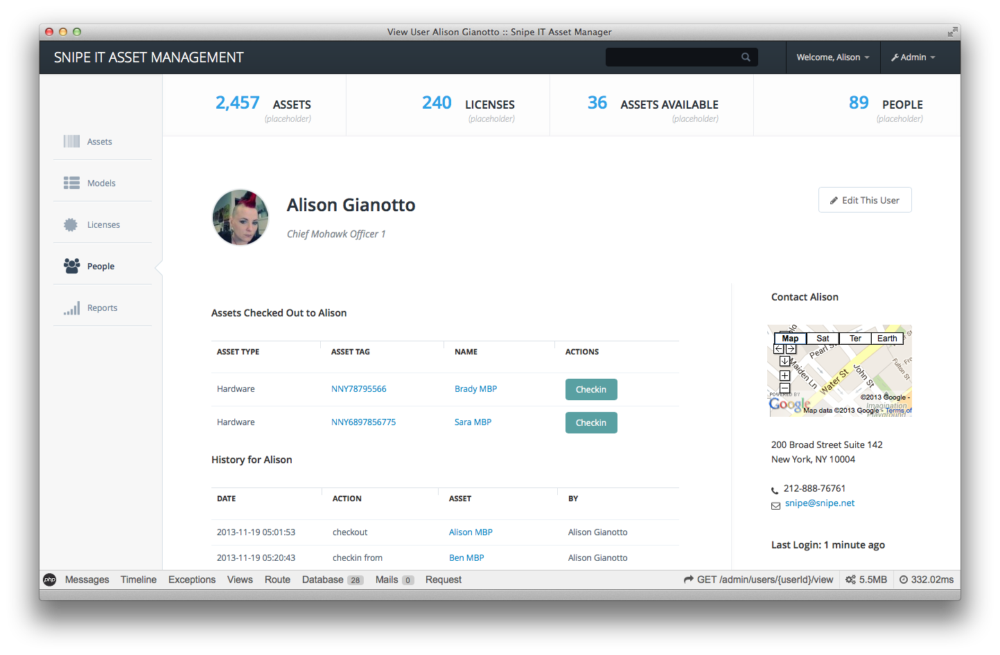
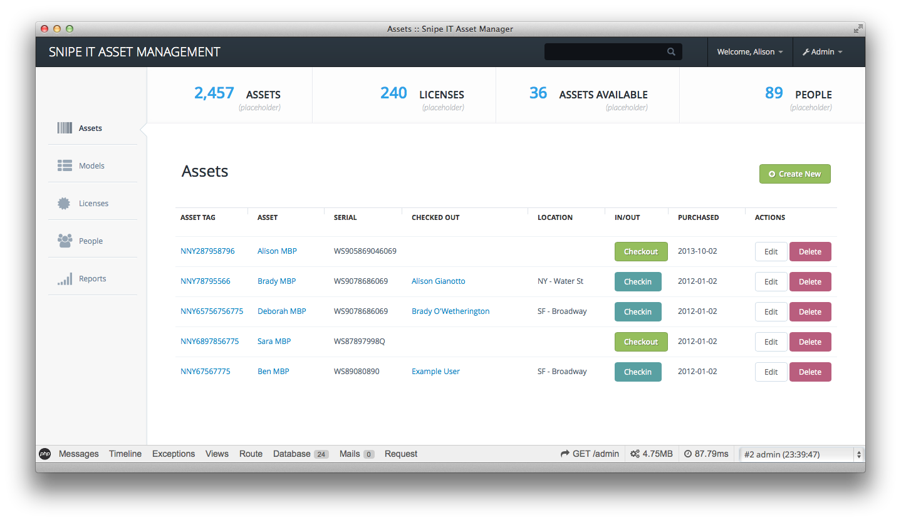
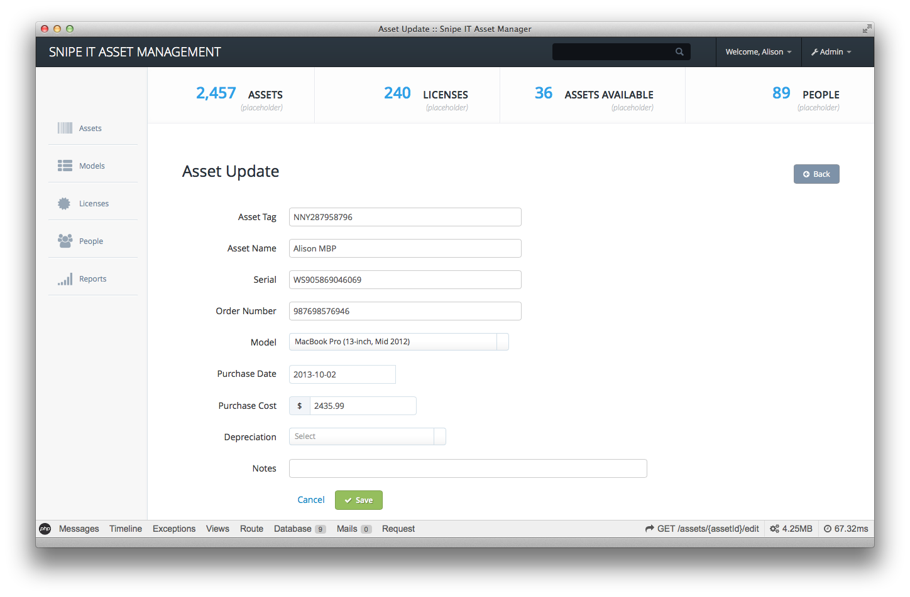
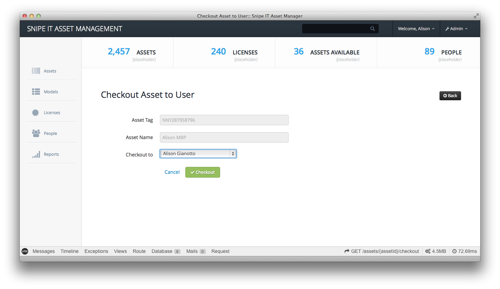
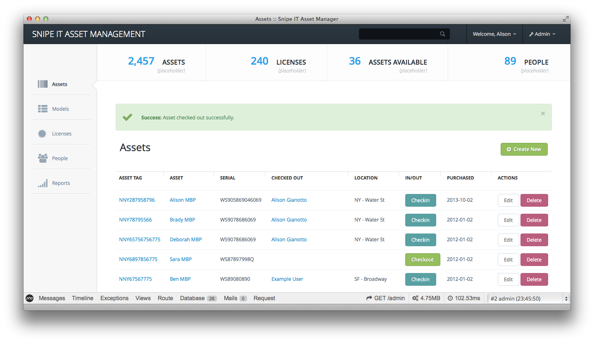
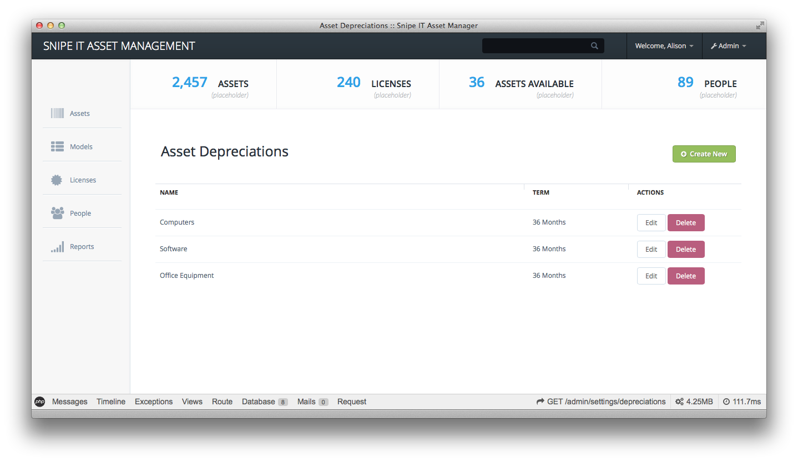

Snipe IT is a FOSS project for asset tracking, license management, and more.
Snipe IT is written in PHP, using Laravel 4 and Bootstrap. We're not at an MVP release just yet, but that's coming very soon. It's currently completely self-hosted, which means you have to run a server to use it, but it also means your compliance people should be happier that your data isn't hanging out in some stranger's cloud somewhere.
That said, just because it's not ready for MVP release, that doesn't mean you can't poke around in the code. The develop branch is up to date with the current stuff we're working on. Once we have something stable, the master branch will be updated, and I'll distribute it as an alpha release.
Check out the Demo!
This is a bleeding-edge alpha demo that's running the develop branch. A few things (reports for one, settings for another) aren't working. You won't be able to delete users, but otherwise it works exactly like the copy I'm developing on. The database re-seeds itself every 30 minutes (or if I push to develop), so get your ASCII dicks in while you can.
Demo url: alpha.snipeitapp.com
Email: admin@example.com
Password: admin
Report bug / Request feature: click here
If you're too lazy to try out the demo, at least check out the screenshots below. :)
And seriously, check out our GitHub issues list to see what's still being worked on, and to let us know what suggestions you may have. This project was started on Nov 13, 2013, so it's still very young, but we're making great progress.
MVP Features Currently in Development
If you'd like to check in on progress, see the roadmap, and weigh in on the feature set, and open an issue if you find one that's not listed. I'd love your feedback.
- Asset models (example: Macbook Pro 13-inch, late 2013)
- Assets belonging to asset models (example: Serial # 1234567890)
- Categories (example: laptops, desktops, monitors, etc)
- Basic depreciation reports (add purchase date, cost and invoice number to pull quick year-end reports on straight-line depreciation)
- Multiple location support (if a laptop started in NY and ended up in the SF office, you can see the progression and depreciate from there)
- Lookup by asset or by person (if you want to know who has a laptop with a specific serial, you can do that - or if you want to look up all assets belonging to one person, you can do that too)
- Manage software licenses - track purchase date, and who each license is checked out to
Screenshots



{kind=link}
{kind=link}



{kind=link}

{kind=link}

{kind=link}

{kind=link}

{kind=link}

Features Currently in Planning
- Barcode generation (I don't actually need this, but I know some people do.)
- Users can request assets and then check them out when they're available (test devices, etc)
- More sophisticated ACL, to allow certain users access to reports, but read-only everywhere else, etc.
- Hosting/DNS tracking (which sites are project managed by which employee, hosted at what location, DNS pointing where, etc)
- Exchange/LDAP integration
Why Snipe IT?
I spent a lot of time trying to find an asset/licensing management system that was free, open source, and flexible enough to handle all of the things I need to handle at work. I am the CTO of a small company (~60 people), and the stuff that was out there either did too much or too little, nothing that was just right. I found myself spending more time juggling spreadsheets and google docs than I did actually doing the stuff I needed to be doing. When we were smaller, this wasn't such a big deal, but as we grew from a 20-person shop to a 60+ person shop, it began to get ugly.
Speaking of FOSS asset tracking, Tracmor is a nice option if you need something right now. The UI is pretty dated, and the code is pretty old, but it's not a bad system and is worth checking out. They have a notion of inventory (in addition to assets) that I just don't need, and it's a bit slow, which is one reason I decided to write my own.
Support or Contact
Have questions about the Snipe IT app? Shoot me an email at snipe@snipe.net or ping me on Twitter @snipeyhead.